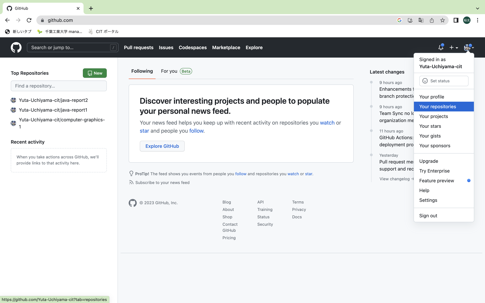
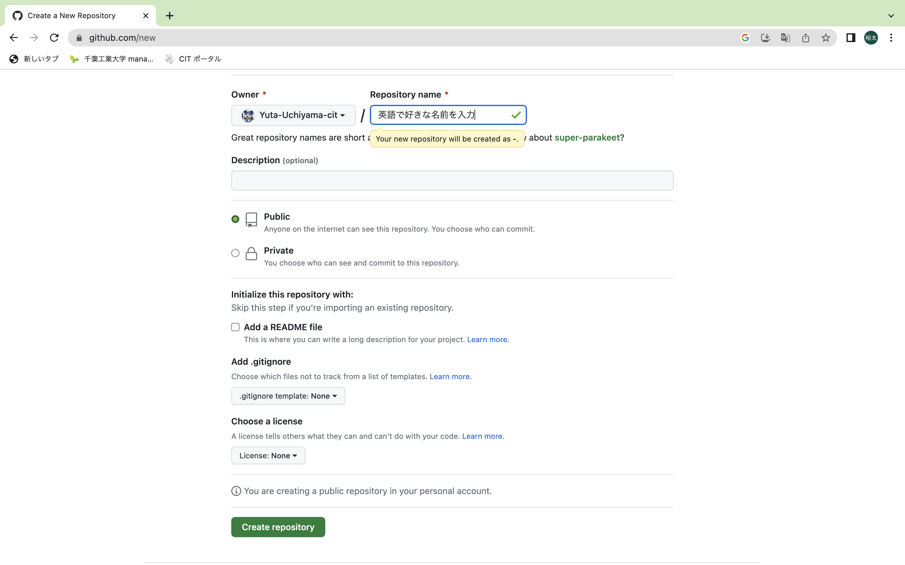
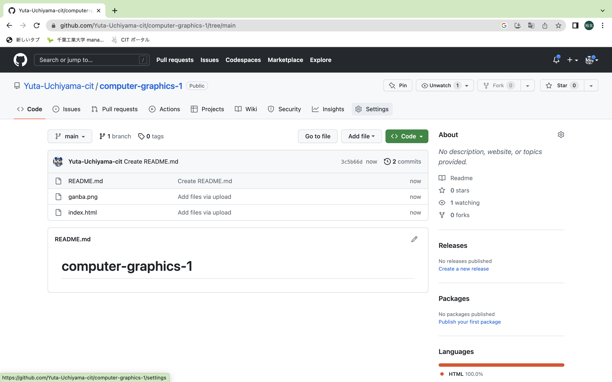

githubアカウントを未作成の方はこちらから作成
※今回は学生特典を受けなくても使えますが,申請をするとpro版を無料で使えるので便利です.
1] 右上のアカウントマークをクリックし「your repositories」へ移動
2] 右上の
3] repository nameは任意のものを入力（例ではcomputer-graphics-1にしています）
4]
5] manaba上にアップされている
sample.htmlとganba.jpgをアップロードし,commit changesをクリック
6] settingsをクリック
7] 左の項目からPagesを選択
その後,BranchをNoneからmainに変更
8] 少し時間をおいたのちにPagesを確認するとURLが生成されている